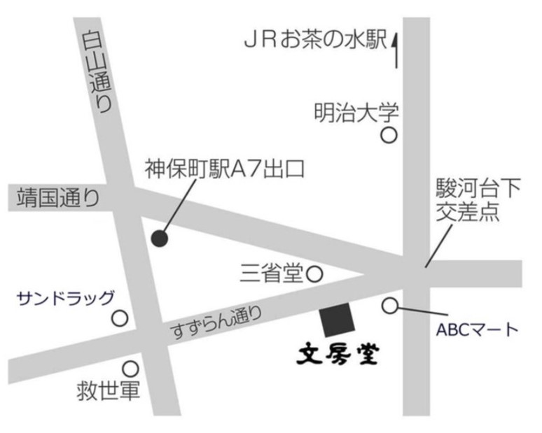

Dear
About 「Dear」
この度、今年の夏に最高のメンバー達とグループ写真展「Dear」を 開催する運びとなりました。
「Dear」には手紙の最初に付ける「親愛なる」 という意味が広く知られていますが、 その他に「愛おしい」という意味があります。
今回のグループ写真展では こんな世の中だからこそ感じる日々の愛おしさや日常の中の幸せを表現することにしました。
人それぞれ「愛おしい」を感じる瞬間は違うと思います。 だからこそ、写真で表現するということに意味を見出したいと思ってます。
Members
Dates
2022/08
18(Tue) - 23(Thu)
10:00 - 18:30
※lastday 10:00 - 17:30Access
文房堂ギャラリー
〒101-0051
東京都千代田区神田 神保時1-21-14F
神保町駅より徒歩5分
御茶ノ水駅より徒歩7分